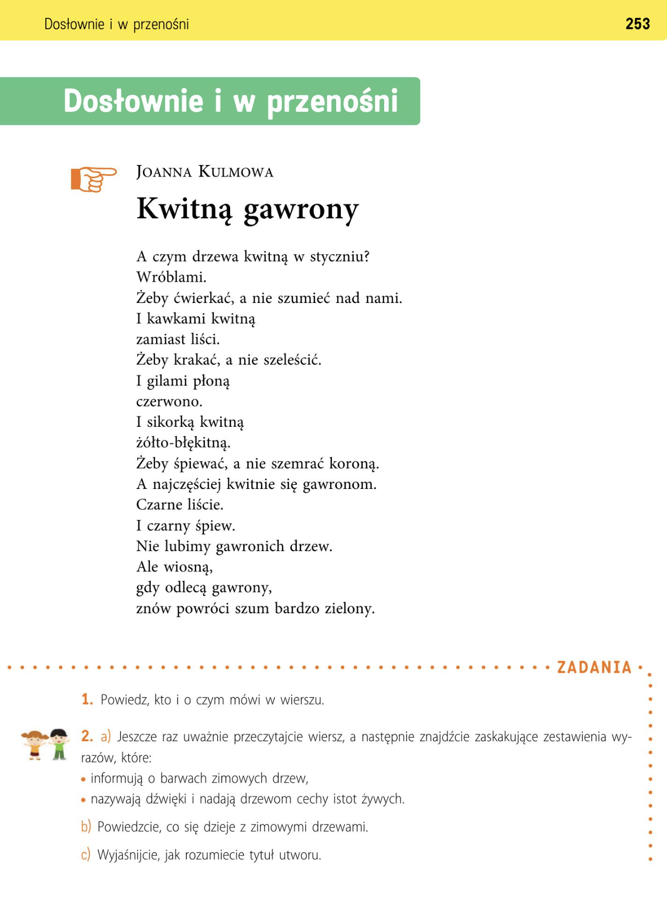
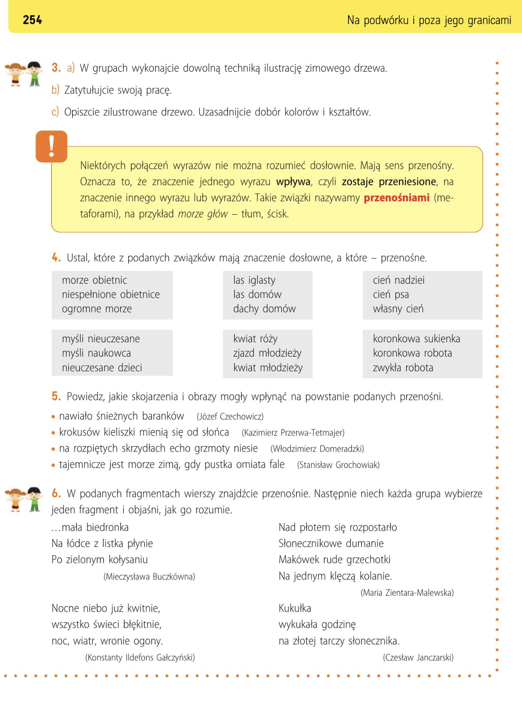

Niektórych połączeń wyrazów nie można rozumieć dosłownie.
Mają sens przenośny.
Oznacza to, że znaczenie jednego wyrazu wpływa, czyli zostaje przeniesione na znaczenie innego wyrazu.
Takie związki nazywamy przenośniami (metaforami).
Na przykład:
morze głów — tłum ludzi
Некоторые словосочетания нельзя воспринимать буквально.
Они имеют переносное значение.
Это означает, что значение одного слова влияет на значение другого слова или переносится на него.
Takie związki nazywamy przenośniami (metaforami).
Например: море голов — толпа людей
Powiedz, kto i o czym mówi w wierszu.
W wierszu mówią dzieci, które nie lubią patrzeć na smutne drzewa w zimie.
Jeszcze raz przeczytaj wiersz i znajdź zestawienia wyrazów, które:
Powiedz, co się dzieje z zimowymi drzewami.
Wyjaśnij, jak rozumiesz tytuł utworu.
- „drzewa kwitną wróblami”, „kawkami kwitną”, „gilami płoną”, „sikorką kwitną żółto – błękitną”
- „ćwierkają”, „kraczą, a nie szeleszczą”, „szemrać koroną”., „krakać, a nie szeleścić”.
Określcie, co dzieje się z drzewami zimowymi.
Określcie, co dzieje się z drzewami zimowymi. - Zimowe drzewa nie mają liści, siedzą na nich ptaki: czarne gawrony, kawki, gile i żółto – błękitne sikorki. W związku z tym osoba mówiąca w wierszu uważa, że drzewa kwitną ptakami.
Podajcie objaśnienie tytułu utworu. - Tytuł zawiera przenośnię, czyli inaczej mówiąc metaforę. Wyrazy, które są połączone w nietypowy sposób, tworzą nowe znaczenie. Nie można rozumieć dosłownie znaczenia tytułu, tylko w nawiązaniu do treści wiersza i rozumienia tego, co się dzieje z drzewami zimą: „kwitną ptakami”.
Opisz zilustrowane drzewo. - Narysowane przez nas drzewo jest bardzo duże, nie ma liści, ponieważ jest zima. Na jego gałęziach zasiadają różne ptaki, które są czarnego i żółto – niebieskiego koloru.
Ustal, które z podanych związków mają znaczenie dosłowne, a które przenośne.
morze obietnic
niespelnione obietnice
ogromne morze
las iglasty
las domów
dachy domów
cień nadziei
cień psa
łasny cień
myśli nieuczesane
mysli naukowca
nieuczesane dzieci
kwiat rožy
zjazd młodzieży
kwiat młodziezy
oronkowa sukienka
koronkowa robota
zwykła robota
Metafora: morze obietnic, myśli nieuczesane, las domów, kwiat młodzieży, cień nadziei, koronkowa robota.
Znaczenie dosłowne: niespełnione obietnice, ogromne morze, myśli naukowca, nieuczesane dzieci, las iglasty, dachy domów, kwiat róży, zjazd młodzieży, cień psa, własny cień, koronkowa sukienka, zwykła robota.
Powiedz, jakie skojarzenia mogły wpłynąć na powstanie podanych przenośni:
Nawiało śnieżnych baranków (Józef Czechowicz) – białe płatki śniegu lub dmuchawce.
Krokusów kieliszki mienią się od słońca (Kazimierz Przerwa Tetmajer) – kwiaty krokusów, świecące słońce.
Na rozpiętych skrzydłach echo grzmoty niesie (Włodzimierz Domaradzki) – usłyszenie echa, skrzydła ptaka.
Tajemnicze jest morze zimą, gdy pustka omiata fale (Stanisław Grochowiak) – morze, fale, zima, poczucie pustki.
W podanych fragmentach wierszy znajdź przenośnie i wyjaśnij ich znaczenie.
mała biedronka
na łódce z listka płynie
po zielonym kołysaniu
Метафора - po zielonym kołysaniu
Что это значит: - 👉 божья коровка плывёт по качающейся траве
трава качается как волны.
nocne niebo już kwitnie
wszystko świeci błękitnie
Метафора - nocne niebo kwitnie
Что это значит: - 👉 ночью на небе много звёзд, как цветов.
nad płotem się rozpostarło
słonecznikowe dumanie
Метафора - słonecznikowe dumanie
Что это значит: - 👉 подсолнухи стоят и повёрнуты к солнцу, как будто задумались.
makówek rude grzechotki
na jednym klęczą kolanie
Метафора - makówek rude grzechotki
Что это значит: - 👉 коробочки мака шуршат, как погремушки.
kukułka wykuwa godzinę
na złotej tarczy słonecznika
Метафора - złota tarcza słonecznika
Что это значит: 👉 подсолнух похож на золотые часы.
Кукушка кукует — как будто отбивает время.